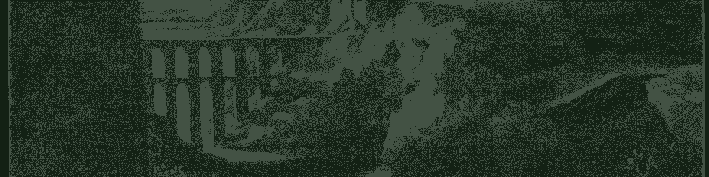

Come in.
This is where I keep the writing. Essays at varying lengths and varying degrees of seriousness — dead languages, dead people, long walks that went nowhere, and whatever else survives the night.
The whole thing is hand-written HTML. No framework, no analytics, no cookie banner, no newsletter, nothing that follows you out. It loads at once and then leaves you alone. If you want anything from the source, take it.
Thanks for stopping by.